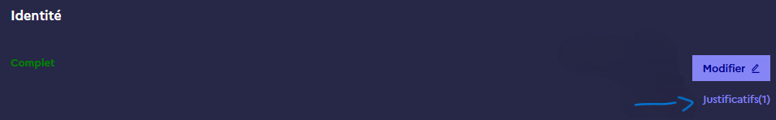
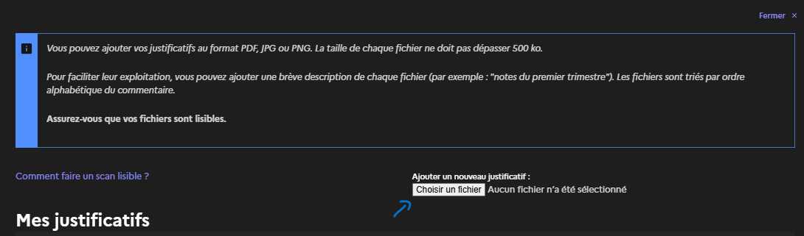
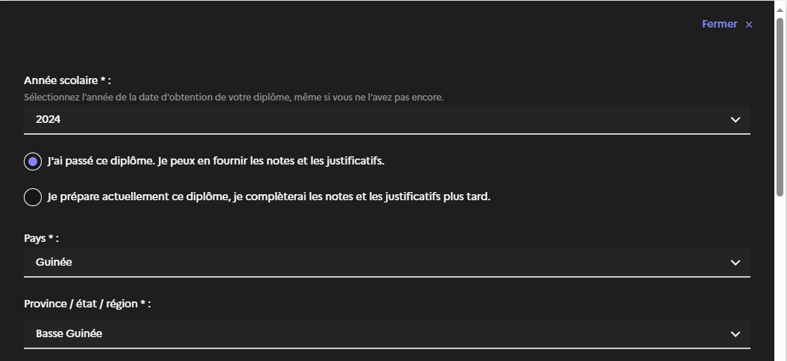
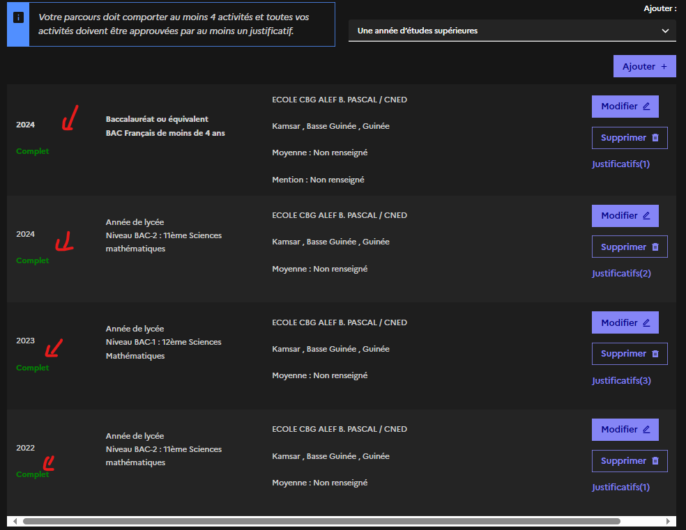

Campus-France Etape 2: Je saisis mon dossier
Liste des Documents
Avant de commencer le processus avec Campus France, il est recommandé de préparer les documents suivants :
- Photocopie du passeport
- photo d'identité
- Relevés de notes seconde
- Relevés de notes première
- Relevés de notes terminale
- Relevés de notes BAC
- Curriculum vitae (facultatif mais conseiller)
- Certificat de langue(facultatif)
Cependant, veuillez noter que certains documents peuvent être soumis ultérieurement au cours du processus. Veuillez vérifier les instructions spécifiques de Campus France pour votre pays et votre programme d'études.
Regardez la vidéo pour avoir une vision d'ensemble, ensuite suivez les explications ci-dessous étape par étape.
Scanner une photographie d'identité de fond blanc d'environ 26 mm de large et 32 mm de haut de qualité 300 DPI. Le fichier doit être au format JPG ou PNG et ne doit pas dépasser une taille de 50 ko.
Si la taille dépasse, vous pouvez utiliser un site pour compresser la photo. Exemple:https://www.compress2go.com/fr

Vous devez joindre une photocopie de votre pièce d'identité et vérifier que vos informations sont correctes.
1)justificatifs
2)Ajouter un passeport
3) Si les informations sont incorecte vous pouvez les modifier

Si vous êtes à Kamsar, utilisez le code suivant : 04, quartier, district numéro de bâtiment (si vous êtes à la cité bien sûr).

1) Cliquez sur "Autre" et mettez "Étudiant en classe de terminale inscrit dans un lycée français".

2) Ajoutez des justificatifs (attestation d'inscription CNED, certificat de scolarité, terminale).
Créez un CV et insérez-le.

Entrez vos notes de seconde, première, terminale et du baccalauréat.
Pour le faire suiver ces étapes:


{kind=link}
{kind=link}
{kind=link}
{kind=link}
{kind=link}
{kind=link}
{kind=link}
Faite la même chose pour le première et la terminale.
NB: Il faudra changer la date et et la série facultative.
Exemple: Niveau BAC-1: 12eme Science Mathetique et Niveau BAC : terminale Sciences mathématiques.
N'oubliez pas les bulletin
Pour Entrer vos note du bac suiver ces étapes:
{kind=link}
{kind=link}

NB: N'oubliez pas les justificatifs du bac (bulletin du BAC)
Voici le resultat
{kind=link}
Les testes de français ne sont pas nécessaire si vous êtes dans un lycée français ou dans un pays francophone

Suivez les instructions:

Suivez les instructions spécifiques fournies.
Suivez les instructions spécifiques fournies.

Si l'indication "complet" s'affiche alors cela veut dire que vous avez fini l'étape 2.
Il ne vous reste plus que l'Etape 3
Cliquez ici{kind=link}
Si c'est pas le cas verifiez que les informations sont bien indiquées.